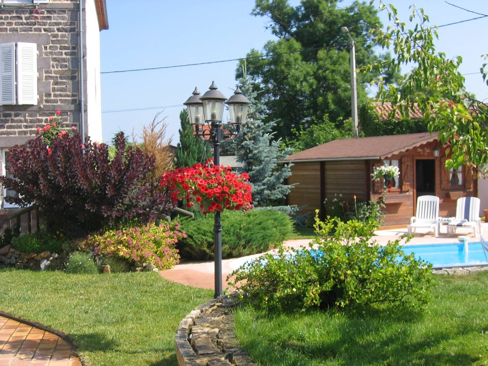
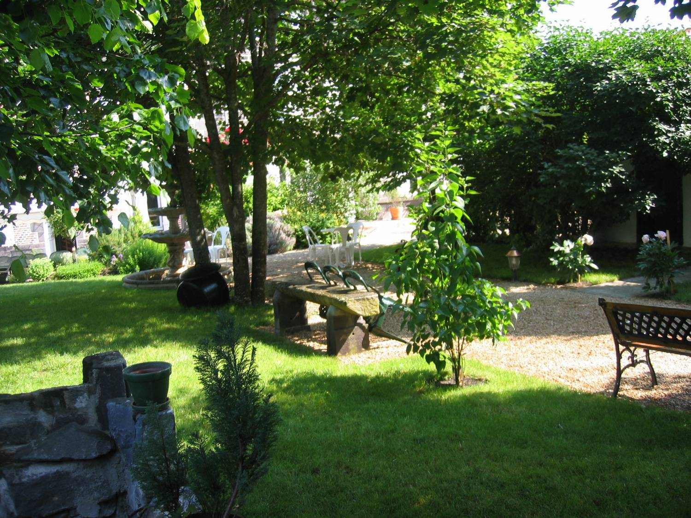
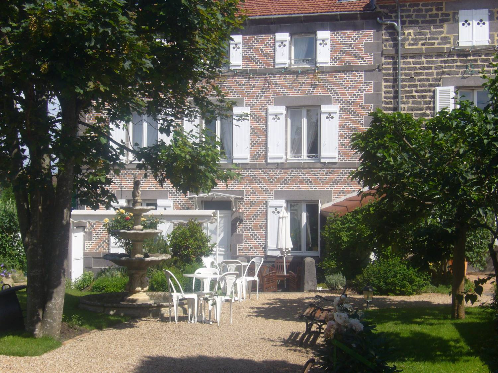
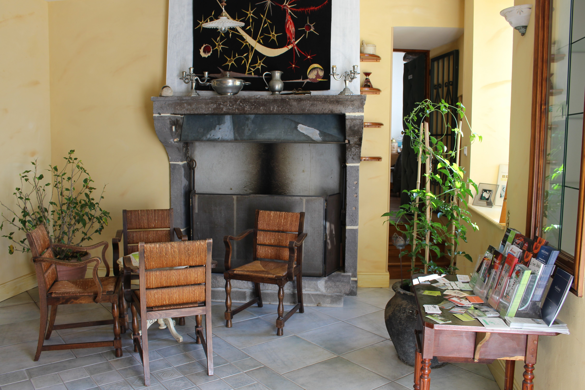
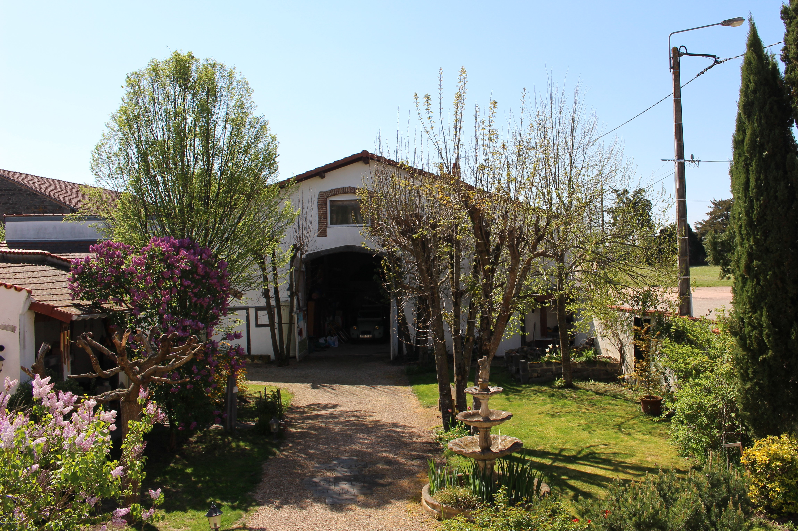
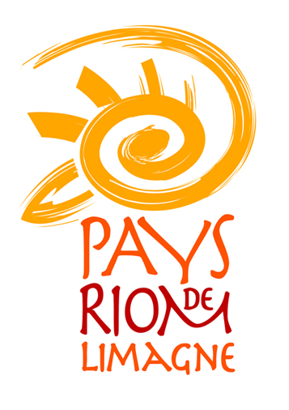

Piscine

Jardin

Maison

Salle à manger

Accueil

Grange
Entre Clermont-Ferrand et Vichy, au pied des volcans, proche de Vulcania,
Les Trèfles Chambres d'hôtes et table d'hôtes
sont situés à 308 m d’altitude au cœur du village de Saint-Ignat.
Au carrefour des volcans d’Auvergne, des lignes douces de la plaine de Limagne et des monts boisés du Livradois-Forez.
La maison d’Hôtes est une ancienne maison de maître typique de la région et restaurée en respectant son authenticité.
Avec son entrée indépendante, elle est attenante à la maison des propriétaires dans un parc clos de murs.
Un salon d’accueil de plein pied ouvre sur la terrasse et sur une vaste salle de séjour lumineuse.
Les 5 chambres d'hôtes de 16 à 27 m2 sont toutes équipées de salles d’eau privatives et de WC séparés.
Dina notre chien Berger australien sera, elle aussi, heureuse de vous accueillir.
Au départ de la maison, un sentier de randonnée vous invite à flâner sur les berges de la Morge.
Pour vous relaxer après randonnées ou visites culturelles,Je vous invite à vous détendre dans notre piscine.
Vous vous sentez bien
et vous n'avez pas envie de reprendre votre voiture pour dîner à l'extérieur :
je vous propose alors une formule de repas léger
Vous trouverez aux Trèfles un espace de rencontre.
La maison d'hôtes peut être votre lieu pour organiser des stages, pour créer, se concentrer, se ressourcer....
Vous pouvez aussi organiser votre formation dans un cadre chaleureux et convivial.
ou accueillir vos collaborateurs dans un cadre favorisant la concentration, la disponibilité et le ressourcement.
RÉSERVATION MINIMUM 2 NUITS
TARIFS
Chambres d'hôtes : A partir de 85 € la chambre 2 personnes - 115 € la chambre 3 personnes.
Lit supplémentaire : 20.00 € - Réduction basse saison à partir de 3 nuitées.
Les petits déjeuners sont inclus.
Table d'Hôtes * les mercredis et samedis sur réservation 24h à l'avance : 18 €
Les repas ne sont pas assurés pour les enfants de moins de 4 ans.
Repas terroir groupes à partir de 8 personnes : 25.00 € (tous les soirs sur réservation 24h)
Taxe de séjour : 0.60 € par adulte et par jour
Règlements : par chèque, numéraire, chèque vacances et virement bancaire.
(3 € de commission si paiement par chèque vacances)
Je ne suis pas en mesure d'accepter le règlement de nos prestations par carte bancaire.
INFOS UTILES
Ouvert toute l'année sur réservation
Parking privé.
Garage motos : Il est possible de garer plusieurs motos dans la grange.
Les animaux ne sont pas acceptés, sauf accord avec les propriétaires : 5 € par jour
Les Trèfles vous accueille à partir de 17 heures
Les chambres doivent être libérées à 10 heures
Tous commerces à 4 km
Situation géographique
Longitude : 3.2728231 Latitude : 45.9231627
En voiture
De Paris : A 71 → direction Clermont-Ferrand sortie n° 13 → Riom/Volvic, 3ème sortie au rond point → Riom, traverser Riom, sortie D224 → Ennezat, à proximité d’Ennezat : rond point 2ème sortie → D210 puis prendre à droite →D17 direction Saint-Ignat
De Clermont-Ferrand → direction Paris A 71 sortie 14 → Gerzat, 4ème sortie au rond point →Randan/Maringues/ Ennezat, passage à proximité d’Ennezat prendre la D17→ Saint-Ignat
En train
La gare de Riom est à 13 km
La gare de Clermont-Ferrand est à 25 km
Par avion
L’aéroport de Clermont-Ferrand/Aulnat est situé à 25 km
Séjours-cadeaux
Anniversaires, fêtes, cadeaux de mariage…
Faites un cadeau original et offrez un séjour à vos parents, à vos enfants, à vos amis ou à vos collaborateurs : "Chambres d'hôtes et découverte de l'Auvergne"
Dès réception de votre paiement, nous vous adressons un "Bon pour…" accompagné d'une documentation sur notre maison d'hôtes et les activités alentour.
Séjours en famille ou entre amis
Vous pouvez privatiser Les Trèfles , chambres d'hôtes et table d'hôtes, en devenant des hôtes privilégiés le temps d'un séjour entre amis ou en famille.
Je vous aiderai à organiser vos activités durant votre séjour : suggestions de visites, d'excursions et de balades (prêt d'itinéraires et de cartes).
En accord avec vous, je vous concocterai votre repas de fête (anniversaire, départ à la retraite, ...)
Vous pouvez aussi réserver Les Trèfles chambres d'hôtes et table d'hôtes en gestion libre.
Partenaires
Office de tourisme Riom Limagne

Nous portons une attention particulière à la préservation de notre environnement.
Par des gestes simples, nous pouvons tous modifier nos comportements.
Ainsi, aux trèfles, nous sommes attentifs au tri sélectif de nos déchets, nous collectons les eaux de
pluie, nous sommes vigilants au gaspillage énergétique (ampoules à basse consommation, thermostats
dans toutes les pièces, chasses d'eau économiques...),nous utilisons des produits respectueux de
l'environnement pour l'entretien de notre jardin, Les produits que vous trouverez sur notre table
sont autant que possible produits dans notre environnement proche et issus d'une agriculture raisonnée,
nous privilégions les relations avec les producteurs locaux.